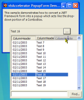
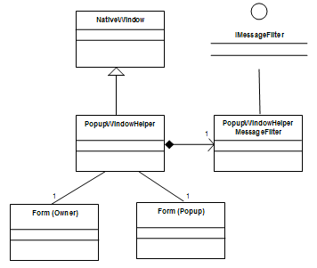

Popup Form Demonstration (62K)
Popup Form Demonstration (62K)
 Bugs: 1 / 1
Bugs: 1 / 1
 Issues: 0 / 0
Issues: 0 / 0
 Questions: 0 / 0
Questions: 0 / 0
 1 Nov 2003
1 Nov 2003
First Posted
 Adding Mouse Gesture Support to .NET Windows Applications
Adding Mouse Gesture Support to .NET Windows Applications
 vbAccelerator Drop-Down and Popup Form Control
vbAccelerator Drop-Down and Popup Form Control

Use .NET Forms as Popup Windows
A reusable class to convert any form into a Popup Window.
This article provides a reusable class which you can use to convert a form into a popup which works in the same way as the drop-down portion of a ListBox or the popup controls for picking colours or tables in Office. In addition to wrapping all the functionality you need to ensure the popup is cancelled if the user clicks out of the popup or alt-tabs to another application, it also ensures the title bar of the application stays in focus whilst the drop-down is displayed. VB.NET and C# code provided.
Creating a Popup Window
Popup Windows shown from controls are used widely in Windows applications to provide succinct and functional UIs. Examples of popup windows include things like menus, combo-box drop-downs, the date-time picker and many of the tools provided in Microsoft Office applications. If you are building a professional application then having the ability to create these types of controls is invaluable. Unfortunately, there isn't a built-in control or Windows style in the Windows API or .NET Framework which lets you do this easily.
If you try to create a drop-down control using a standard .NET Framework form, you'll see it is easy enough to make it pop up in the correct place, but there are two things that need to be done to make it act like a popup window from a control:
- Cancellation
The popup part of a drop-down control is cancelled whenever the user clicks somewhere away from the drop-down, or if they alt-tab to another application. Although in theory you may be able to write code to detect these events, once you've done it the resulting code would be extremely difficult to maintain. - Keep the Application Window Titlebar Active
When ever you show a new form, regardless of whether it has a titlebar or if it is an owned form, the window you've shown it from loses focus. This is correct if the new Window is a dialog or separate view, but not correct if you are showing a popup. An alternative which doesn't cause the loss of focus is to use a control instead of a form, but if you do that then the control is contained within the boundaries of the owning form, and a drop-down should be able to display anywhere. You can try hacking the control by modifying its parent, but then you'll find that focus no longer works at all.
Resolving these issues requires a little persistence, but it can be done, and the PopupWindowHelper class provided with this article is a reusable class which does it with the help of a small handful of unmanaged calls, subclassing and message loop filtering.
About PopupWindowHelper
To understand the structure of the PopupWindowHelper class, its best first to understand how it goes about solving the problems posed in the last section. There are two parts to the solution:
- Detecting Popup Form Cancellation by Mouse Click
- Keeping the Main Form Title Active and Detecting Alt-Tabbing
I'll cover these in turn.
1. Detecting Popup Form Cancellation by Mouse Click
As you will have seen from the .NET Windows namespace, mouse events are provided individually to the form or control that the mouse is over when the event occurs. So how can you detect a mouse event over any control or form regardless of where it occurs? The answer is to filter all messages sent to the application's Message Loop. A more in-depth description of this technique is provided in the article Adding Mouse Gesture Support to .NET Windows Applications so I won't cover it again here, suffice to say that to use this technique you implement the IMessageFilter interface which then receives notifications of a mouse event over any object.
2. Keeping the Main Form Title Active and Detecting Alt-Tabbing
Both of these requirements can be met by subclassing the main window which shows the popup window. To subclass a window, you use the NativeWindow object as described in Subclassing in .NET, which allows you to intercept all messages intended for the Window. Then there are two messages to look out for.
First, keeping the title active. This aspect is slightly tricky. Windows controls the active state of a title bar using the WM_NCACTIVATE (Non-client Activate) message. However, this message is also used for other things such as keyboard focus, which can lead to big problems if you interrupt processing of it. Particularly in this case: if you attempt to consume or modify a WM_NCACTIVATE message that asks to deactivate a Window, you'll find that the window that is subsequently shown cannot gain the input focus regardless of what you do.
The solution to this problem is, of course, a hack. I first chanced upon this in 1999 when trying to create the same effect in VB Classic: rather than trying to ignore or modify the WM_NCACTIVATE message, instead process it as normal but immediately send another WM_NCACTIVATE back again to tell the Window to render itself in the active state again. This is a bit of a hack, but it works as well here as it did before.
Detecting Alt-Tabbing is more straightforward. The WM_ACTIVATEAPP message is sent to all top level windows of an application when you Alt-Tab to or from the application. The WParam value indicates the state: a value of 0 means the application is being deactivated, otherwise it is being activated.
PopupWindowHelper Implementation
Given the description above, it should come as no surprise that the implementation consists of two classes, one to subclass the main window for WM_NCACTIVATE and WM_ACTIVATEAPP messages and another to implement the message filter:
PopupWindowHelper implementation UML Diagram.
The PopupWindowHelperMessageFilter performs message filtering for mouse clicks. Basically, it checks to see whether a mouse event is detected outside the popup form, and if so, raises an event which notifies the PopupWindowHelper class of the event:
private const int WM_LBUTTONDOWN = 0x201;
private const int WM_RBUTTONDOWN = 0x204;
private const int WM_MBUTTONDOWN = 0x207;
private const int WM_NCLBUTTONDOWN = 0x0A1;
private const int WM_NCRBUTTONDOWN = 0x0A4;
private const int WM_NCMBUTTONDOWN = 0x0A7;
/// <summary>
/// Checks the message loop for mouse messages whilst the popup
/// window is displayed. If one is detected the position is
/// checked to see if it is outside the form, and the owner
/// is notified if so.
/// </summary>
/// <param name="m">Windows Message about to be
/// processed by the message loop</param>
/// <returns><c>true</c> to filter the message, <c>false</c>
/// otherwise. This implementation always returns
/// <c>false</c>.</returns>
public bool PreFilterMessage(ref Message m)
{
if (this.popup != null)
{
switch (m.Msg)
{
case WM_LBUTTONDOWN:
case WM_RBUTTONDOWN:
case WM_MBUTTONDOWN:
case WM_NCLBUTTONDOWN:
case WM_NCRBUTTONDOWN:
case WM_NCMBUTTONDOWN:
OnMouseDown();
break;
}
}
return false;
}
/// <summary>
/// Checks the mouse location and calls the OnCancelPopup method
/// if the mouse is outside the popup form.
/// </summary>
private void OnMouseDown()
{
// Get the cursor location
Point cursorPos = Cursor.Position;
// Check if it is within the popup form
if (!popup.Bounds.Contains(cursorPos))
{
// If not, then call to see if it should be closed
OnCancelPopup(new PopupCancelEventArgs(popup, cursorPos));
}
}
The PopupWindowHelper performs processing on the messages passing through the window procedure of the main form:
[DllImport("user32", CharSet = CharSet.Auto)]
private extern static int SendMessage(
IntPtr handle, int msg, int wParam, IntPtr lParam);
[DllImport("user32", CharSet = CharSet.Auto)]
private extern static int PostMessage(
IntPtr handle, int msg, int wParam, IntPtr lParam);
private const int WM_ACTIVATE = 0x006;
private const int WM_ACTIVATEAPP = 0x01C;
private const int WM_NCACTIVATE = 0x086;
/// <summary>
/// Subclasses the owning form's existing Window Procedure to enables the
/// title bar to remain active when a popup is show, and to detect if
/// the user clicks onto another application whilst the popup is visible.
/// </summary>
/// <param name="m">Window Procedure Message</param>
protected override void WndProc(ref Message m)
{
base.WndProc(ref m);
if (this.popupShowing)
{
// check for WM_ACTIVATEAPP and WM_NCACTIVATE
if (m.Msg == WM_NCACTIVATE)
{
// Check if the title bar will made inactive:
if (((int) m.WParam) == 0)
{
// If so reactivate it.
SendMessage(this.Handle, WM_NCACTIVATE, 1, IntPtr.Zero);
// Note it's no good to try and consume this message;
// if you try to do that you'll end up with windows
// that don't respond.
}
}
else if (m.Msg == WM_ACTIVATEAPP)
{
// Check if the application is being deactivated.
if ((int)m.WParam == 0)
{
// It is so cancel the popup:
ClosePopup();
// And put the title bar into the inactive state:
PostMessage(this.Handle, WM_NCACTIVATE, 0, IntPtr.Zero);
}
}
}
}
Using the Class to Make a Popup Form
This is very simple to do. Bring in the PopupWindowHelper code into your project, and then perform the following steps:
- Create a form to display as a popup, and set these properties:
- ControlBox = false
- FormBorderStyle = None
- MinimizeBox = false
- MaximizeBox = false
- ShowInTaskBar = false
- Text = ""
- TopMost = true
- Create an instance of the PopupWindowHelper class.
- Respond to the PopupCancel and PopupClose as required to determine when the popup is cancelled or closed as required.
- Use the ShowPopup method of PopupWindowHelper to show the popup window.
Conclusion
This article provides a reusable class which wraps up all the tricky details of implementing a popup form which can be used as a drop-down from a control. The demonstration project provided here is rudimentary, but the technique can be easily used to create sophisticated drop-down controls like colour pickers, undo/redo drop-downs, table pickers and so on.